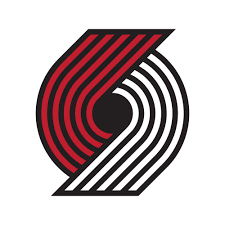

Glen Buck
Portland,Oregon
I was born in Portland,On March 28th, 1985. I grew up on the computer and have always been interested in learning the functionality of programming. I believe with hard work and dedication, you can achieve just about anything you set your goals to. Learning how to program has been my number one priority for the last year and one of my life long goals.
Contact Info
My GitHub Repos
Background
I went to Benson High School in Portland, Oregon. I do not have a background in tech or programming but I have always had an interest in it ever since I was young. I have always been fascinated in the functionality of programs and their behavior. I come from a long line of accountants, so I do know what it is like to have things done in a systematic order. As I have done some personal research on some basic programming in the last couple years, I have noticed that certain things happen to click for me, which is what pushed me into getting into Epicodus. I hope to gain a better understaninding and hope to build on a passion and start a new career by the end of these next 20 weeks here at Epicodus.
Work History
Tax Services Inc.
Office and Client Realtions Manager (2/10/10 - 3/30/20)
- In charge of scheduling for both employees and clients.
- Day to day communication with clients and sometimes made house visits if they could not come in.
- Collected and entered client data.
- Handled payments from clients and or set up payment plans.
- In charge supply orders from vendors.
Why I got into coding and what I want to get out of Epicodus
I got into coding because not only does it intrigue me, it also challenges me. As I did some free online research before getting into Epicodus, I practiced with some practice tests and projects, and though I was able to figure out some of the beignner level ones, I also failed some, which in turn, made me more eager to figure it out. That example there showed me that I really do like coding and have the desire to porblem solve. I realize it is the futre. Programming is everywhere, even in places we would not expect. So I feel a career in computer programming would be a good fit for me.I am hoping to gain a better understanding of computer programming after the time I finish at Epicodus. I am hoping to be comfortable with being able to build a simple app from scratch with the knowledge and tools I will have gained from this program. I also hope to land a job in the field within the first 4 months of completing the program.
My Hobbies
- Snowboarding

- Sports 
- Billiards

My Projects
- Walrus Float
- My First Webpage
- Cookie Recipes
This project was made to use floats. I used a picture of a walrus and made a float around it.
Languages Used: HTML and CSS.
This was my very first webpage.
Languages Used: HTML and CSS.
This project was created to show a good cookie recipe.
Languages Used: HTML and CSS.